Södermalm i tid och rum. Stockholm
Ersta
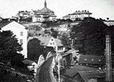
Ersta från Åsöberget 1896. Saltsjöbanans viadukt vid Stora varvet.
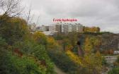
2002
Ersta kapell och sjukhus. Bilden tagen från Barnängens Tekniska Fabriks Skorsten.Från CD:n Söder i våra hjärtan
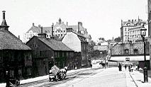
Erstagatan norrut 1900-1910.
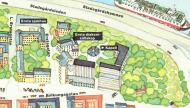
Ur Nära inpå Stockholm, M Korotynska,

Sågargatan norrut ned mot Folkungagatan. Bilden tagen 1880.
"Ehrsta - - är på 1733 års karta tecknat såsom en Petterssons tillhörighet. Denna egendomskall av en Grill vara anlagd; flera avsättningar äro med mycken kostnad sprängda i bergen,som blivit tillredda för allehanda växter och träns planterande. På höjden äro tvenne lusthusoch längre ner våningshus uppförda. Assessoren i Bergs-Collegio Bengt Qvist är nu därtillägare, som här inrättat ett stålgjuteri."
|
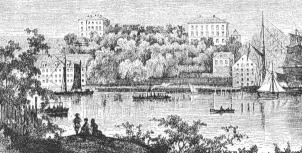  Ersta Diakonissanstalt på 1860-talet innan kyrkan byggdes. Ersta Diakonissanstalt på 1860-talet innan kyrkan byggdes. | Detta är vad J. Elers har att berätta om Ersta i tredje delen av verket "Stockholm" (1801 ).Andra äldre Stockholms-inventerare har inte mycket mer att komma med. A. Tidner ("Palatsoch kåkar", 1917) meddelar: "Ersta var på 1700-talet en privat egendom, som tillhördesläkten Grill. På höjden stod ett lusthus, längre ned boningshus. 1788 inrättades där ettstålgjuteri." Gustaf Thomée ("Stockholmska promenader", 1863) konstaterar bara att Ersta"är en privat egendom", en annan guide från samma tid, Georg Scheutz ("Stockholm,illustrerade utkast", 1860) omnämner överhuvudtaget inte egendomen. |
| Johan Abraham Grill var under 1700-talet en av delägarna i Stora eller Södra varvet vid Tegelviken och Erstaklippans östsida. Han nämns i samband med Ersta i en skrivelse av dåvarande underståthållaren von Axelson, skrivelsen handlar bl.a. om svårigheterna för polis och myndigheter att bevaka Södermalms saltsjösida." I denna trakt vore det höst och vinter så mörkt, anmärkte han, att det onda lättast kunde dölja sig där. Han trodde, att detta onda skulle kunna avhjälpas, om lanternor uppsattes i bukten vid Stora stadsvarvet och vid Tegelviken. Borgaren och storköpmannen Johan Abraham Grill skulle vidare övertalas att uppsätta en lanterna vid Erstahörnet." (Citerat efter Nils Staf : "Polisväsendet i Stockholm,1776-1850")
Även en annan av de främsta stockholmska köpmanssläkterna, Hebbe, har nämnts i sambandmed Ersta. Carl Forsstrand uppger i "Skeppsbroadeln" (1916) att Christian Hebbes änka Elsabet på 1780-talet sommartid bebodde "Ersta-Borgen i Catharina församling".Vid denna tid ägdes emellertid Ersta (eller åtminstone en stor del därav) av övermasmästaren, senare bergmästaren i Bergskollegium Bengt Andersson Qvist |
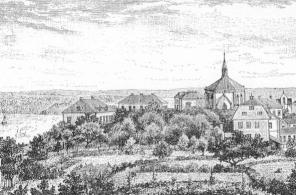  Diakonissanstalten från Stigberget 1885 Diakonissanstalten från Stigberget 1885 |
. Qvist hade studerat järn- och ståltillverkningen i England och Frankrike och särskilt den då nya degelstålsprocessen som Benjamin Huntsman i Sheffield uppfunnit.
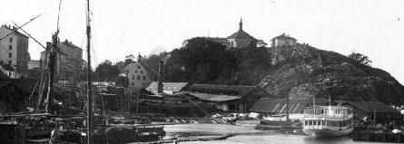  Bilden tagen 1880-90. Ersta från Södra varvet. Tegelviken. Bilden tagen 1880-90. Ersta från Södra varvet. Tegelviken. |
Qvist köpte Ersta för att anlägga ett degelstålverk, det första i Sverigeoch överhuvudtaget det första utanför England. 1770, sedan Qvist erhållit ett lån från Bergskollegiet,igångsattes byggandet "på en tomt å Södermalms mot havssidan vettande sluttning, benämnd Ersta och ännu känd under detta namn" (Carl Sahlin: "De svenska degelstålsverken", i "Med hammare ochfackla, Årsbok utgiven av Sancte Örjens Gille", 1932), Enligt Qvists ritning innehöll smälthuset sexdegelugnar placerade tre på varje gavelvägg, från ugnarna ledde rökkanaler till en skorsten på varderagaveln. "Till det yttre tedde sig byggnaden ganska ovanlig, där den uppe på Erstahöjden var synligvida omkring och skarpt stack av från andra hus genom de båda breda men tunna gavelskorstenarna." |
| Qvist avled 1799. "Icke långt efter hans död torde avveckling och nedläggning av driften vid degelstålverket hava igångsatts, ehuru i upprättat inbördes testamente var föreskrivet att hans efterlevande maka skulle sitta i orubbat bo. Vid bouppteckningen den 9 januari 1800 befunnos nämligen tillgångarna understiga skulderna med omkring 4 000 riksdaler. Gjutstålsverket med tomt och inventarier upptogos därvid i ett värde av 9 000 riksdaler. Detsamma torde snart nog hava sålts och så småningom blevo byggnaderna nedrivna. År 1817 säger bergsrådet Gustaf Broling att knappt några lämningar funnos kvar av 'den verkligen kostsamma anläggningen' " (Sahlin).
På 1820-talet köptes Ersta av grosshandlaren A. B. Wallis och det uppges 1829 (Nils Lundequist:"Stockholms stads historia") att stället "under senare åren varit ett mål för promenerande, som dels velat njuta av den vackra utsikten, som stället erbjuder, och dels se de påfåglar, som där underhållas". Familjen Wallis drev ett sockerbruk som låg i Maria (Hornsgatan 33) och som på 1850-taletsysselsatte en mästare och tjugoen arbetare. 1860 upptas F. Wallis, änka, som ägare av Ersta. |
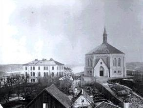 Ersta kyrka och gamla sjukhus till vänster, båda ritade av arkitekt P U Stenhammar. Sjukhuset byggt 1864, rivet 1966. Kyrkan byggd 1872. Bilden tagen 1872 från väster. |
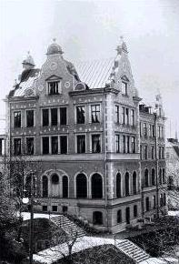 Ersta nya diakonisshus, invigt 1896. Arkitekter Berve/Kumlien. Bilden tagen 1896. |
1861 inköptes Ersta av justitierådet Axel Adlercreutz. Han köpte dock inte stället för egen räkning utan för att så snart som det var ekonomiskt möjligt överlåta det till diakonissällskapet. Den 14 april 1849 sammanträffade en grupp religiöst och socialt intresserade människor och bildade ett sällskap "vars ändamål är att söka tillvägabringa, uti huvudstaden, en Diakonissanstalt, efter mönstret av de likartade inrättningar, vilka i andra protestantiska länder redan finnas".
Diakonissanstaltens arbete har skildrats i flera böcker (bl.a. minnesskrifterna till femtioårs- och hundraårsjubiléerna) och ska här inte närmare beskrivas. |

Först tyckte man nog att det var en utkant som man kommit till. "Det var i de dagarna ett riktigt företag att från staden begiva sig upp till Ersta. Redan det dryga avståndet avskräckte, men det va rändå det minsta. Ingen spårväg, inga stentrappor, utan hade man att från den trånga och mindre välberyktade Stadsgården välja mellan Söderbergs och Sista styverns trappor. Gator och gatubelysning inärheten voro sådana,
| att anstalten fick bönfalla hos staden att få dem i någorlunda tillfredsställande skick. Med ett ord: trakten företedde en föga tilldragande utkantsfysionomi.
Men då som nu lönade det mödan att trotsa svårigheterna. Vi tro oss icke säga för mycket, när vi hålla före, att ingen diakonissanstalt på jorden fått en så härlig plats att bygga och bo på som vår. Å ena sidan nedanför oss huvudstaden i all sin skönhet, evad det är solljus dag eller strålande gasilluminering, å den andra saltsjöinloppet med dess livliga panorama, och en vid, fri horisont bakom det hela." "Här stodo nu, användbara för anstaltens behov, några smärre hus å ömse sidor om porten samt några nedanför belägna hus, i vilka Magdalenahemmet var inrymt." ("Minnesskrift", 1901) | 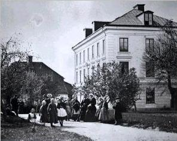 Gamla diakonisshuset, byggt 1864. arkitekt P U Stenhammar. Bilden tagen 1870-80. |
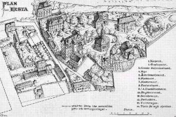  |
De hus som fanns räckte inte långt, man började genast uppföra nybyggnader. 1863 byggdes ett diakonisshus och ett sjukhus och 1873 stod kapellet klart, arkitekt för dessa byggen var P. U.Stenhammar. 1878 tillkom ett nytt Magdalenahem, 1881 ett gravkapell, 1885 ålderdomshem och sjukhem, 1890 pastorshuset, 1896 nya diakonisshuset och 1907 nya sjukhuset (arkitekt för samtliga dessa byggen: Axel Kumlien). 1919 byggdes ett nytt gravkapell och ett nytt ålderdomshem, arkitekt var då C. A. D:son Bååk. Större delen av dessa hus har sopats bort av den senaste ombyggnadsvågen på Ersta.
De som skildrat livet på diakonissanstaltens Ersta har främst berättat om det religiösa och sociala arbetet och varit ganska ointresserade av trakten som sådan och tidstypiska vardagliga förhållanden.Några uppgifter ur C. F. V. Sondéns duplicerade "Några barndomsminnen från Ersta" bör därför kunna komplettera den bild som finns. Sondén föddes 1884 och skildringen avser alltså Ersta omkring sekelskiftet. Om de gamla porthusen berättar Sondén: |
"I det till höger var Diakonissanstaltens tvättstuga inrymt medan det vänstra i första rummet utgjorde hemvist för den som vaktade porten. - - Egentligen fanns det två portar. Först den stora yttre som alltid stod öppen om dagarna. Så därinnanför gallergrindar av järn som först öppnades av syster Augusta sedan man tryckt på en knapp och hon inifrån sitt tillhåll hunnit granska den besökande. - - SysterAugusta skötte också om all inkommande och avgående post. Där fanns även telefon. - - Någon annanstans inom området fanns det ej telefon på den tiden. - - I porten minns jag även
| tvenne andra rum förutom portvaktsrummet dit man kom genom en stenbelagd gång. I det yttre rummet samlades dagligen upp alla diakonissanstaltens fotogenlampor som skulle putsas och påfyllas. - - Till fattiga,hungrande brukade man utdela mat i porten. - - Till höger om tvättstugan fanns en längre stenbyggnad där man uppfödde grisar. Då det var grisslakt hördes det vida ikring utanför anstalten."
All ved som anstalten behövde fraktades på skutor som lade till i hamnen nedanför, veden vevades sedan upp på järnvägsspår som lagts över berget till den terrass som fanns mellan diakonisshuset och gamla sjukhuset. En gång om året kom "Kalmarskomakaren" på besök till Ersta. Alla som tillhörde anstalten eller hade med den att göra fick då infinna sig i porthuset där skomakaren tog mått på fötterna. Efter en tid kom sedan skorna från Kalmar i stora säckar. |
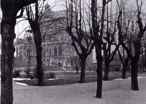 Nya diakonisshuset. Bilden tagen 1894-96 från NO. |
I "En dag av mitt liv" (1942) har Ludvig Nordström skildrat utsikten från Ersta - och Ersta så som det då ännu var: "Utsikten från Erstaklippan är en av de underbaraste i Stockholm. Men inte nog med det. Första gången jag kom dit, blev jag slagen av en sak. Alla känna Strindbergs berömda skildring i öppningskapitlet av 'Röda rummet': utsikten över Stockholm frånMosebacke. Jag har många gånger under årens lopp varit däruppe, där Strindberg stod - men bilden stämmer inte längre med det Stockholm man ser under sig, och jag har inte kunnat acceptera den riktigt.Men så kommer jag till Erstaklippan och där har jag precis den stämning av Stockholm, som fyller skildringen i 'Röda rummet'. Hit har ännu inte moderniseringen
|
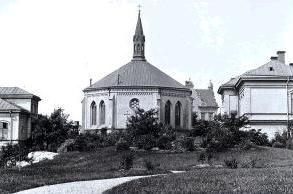 Ersta kyrka 1930-39 från öster. Till vänster pastorsbostaden, till höger sjukhemmet. | riktigt nått. Här har man den känsla,som Strindbergs skildring förmedlar - Stockholm som en småstad och som en skärgårdsstad. I synnerhet som en skärgårdsstad. Under Mosebacke är numera den fria utsikten och rymden försvunna pågrund av stora nya hus och av nya Slussen, men här ser man vattnen fria, holmarna, grönskan, och Gamla stan som en medeltida Hansestad, bogserad från Nordtyskland och förankrad i Strömmen, härs kulle man kunna höra kyrkklockorna i stillheten, fri från spårvagnsbuller, som i Strindbergs ord."
Den stämning som Nordström kunde finna har väl försvunnit från Erstaklippan. Den gamla bebyggelsen har praktiskt taget förintats och ersatts av väldiga och hårt dominerande klossar som slagit sönder mycket av den bild som fanns. Sov skönhetsrådet när sjukhuset vräktes upp vid Fjällgatan, när den bruna jättehögen staplades på klippan och förstörde det samspel som en gång funnits mellan Fåfängan och Erstaklippan? Södersilhuetten sedd från inloppet skulle onekligen ha varit vackrare om den fått vara som den var innan Erstas nya byggen förvandlade den. Att ha fått en så "härlig plats att bygga och bo på" borde ha förpliktigat till att gå varsammare fram. |
Af särskild betydelse för sjukvården är Diakoniss-sjukhuset på Ersta å Södermalm, enär där ej blott intagas sjuka, så väl betalande som å friplatser, utan också sjuksköterskor utbildas. Anstalten är för öfrigt ett ganska omfattande kärleksverk med sjukhus, sjukhem, barnhem och räddningshem samt hushållsskola, alt detta inom anstaltens eget område i Stockholm och dessutom med ett vidsträckt arbetsfält i hela Sverige. Det är godt intryck man får, då man besöker den vackra, fritt och fridfullt belägna egendomen på terrasserna högt öfver saltsjön, bland de lummiga träden, de väl skötta gräsmattorna samt den vidsträckta utsigten öfver segelleden, den gamla malmgården Ersta, som förvandlats till Diakonissanstaltens högkvarter. Intrycket försvagas ingalunda, om man genomgår sjuksalarne och de öfriga lägenheterna och får tillfälle att se hvilken ytterlig renhet, ordning och älven prydlighet och smak öfverallt äro rådande. Samtalar man med någon af »systrarna»,dessa ädla, själfuppoffrande kvinnor som deltaga i alla arbeten inom den vidsträckta anstaltens många afdelningar, vinner man ytterligare visshet om att det hela är ett godt verk, bygdt på människokärlek och sann fromhet. Det kan ju hända, att en sådan inrättning går äfven i fromleriets tjänst och främjar helt andra ändamål än den sanna människokärlekens, men något sådant kan man icke upptäcka, då man noga undersöker tillståndet å Ersta och då man erfar hvad de där vårdade sjuka gjort för erfarenhet.Här är människokärlek i främsta rummet verkande, finner man, och då må äfven de som i religiösa ting tänka olika med inrättningens ledare och arbetande otvunget erkänna, att här öfvas goda gärningar.Af särskildt intresse är att vid besök i inrättningen få till ledsagerska en af dessa bildade kvinnor som under diakonissmössan gömma icke värdslig fåfänga, men det vetande som den världsliga bildningen förr skänkte dem och som de nu tillgodogöra i den kristna barmhärtighetens tjänst. Sådana »systrar» äro många på Ersta. |
| Under de första årtiondena af detta århundrade uppstod tanken att bland andra räddande krafter i samället använda kvinnans äfven bland de protestantiska folken, liksom de katolska redan länge haft sina barmhärtighetssystrar. År 1836 grundades diakonissmoderhuset i Kajserswerth vid Rehn, och detta var plantskolan för alla andra diakonissinrättningar. År 1849 danades i Sverige ett sällskap för upprättandet af ett svenskt diakonissmoderhus som skulle utbilda sjuksköterskor, och 1850 sändes fröken Maria Cederschiöld till Kajserswerth för att närmare studera diakonissväsendet. Efter återkomsten året därpå, utsågs hon till Svenska diakonissanstaltens föreståndarinna och förde arbetet framåt under elfva år. Diakonisshuset, då vid Pilgatan å Kungsholmen, invigdesden 9 juli 1851. År 1862 räknade anstalten 27 diakonissor utom profsystrar och hade redan då sjukhus, skola,barnhem, Magdalenahem samt räddningshem. | 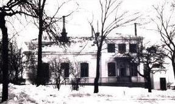 Pastorsbostaden 1888-1966 (riven) |
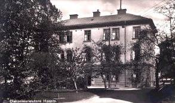 Ersta gamla sjukhus byggt 1864. Bilden från 1920-29. | De första elfva åren tillbragtes dels vid Pilgatan, dels vid Jaktvarfvet å Kungsholmen, där en rymlig tomt inköptes.Tillgångarne voro knappa, men tillförsigten stor. I början af 1860-talet afträdde fröken Cederschiöld, och pastor J. C. Bring vardt diakonissanstaltens föreståndare. Till husmoder utsågs fröken Clara Eckerström. Anstalten flyttades till det af dåvarande assessorn, sedermera statsrådet A. Adlercreutz inköpta och till anstalten öfverlåtna Ersta. Där funnos då blott fyra små stenhus samt några träruckel. I det först nämda inrymdes barnhemmet och Magdalenahemmet, men diakonisshus och sjukhus måste byggas. Genom försäljandet af det gamla hemmet vid Jaktvarfvet gjorde anstalten en vinst på omkring 60,000 kr, hvilket hjälpte betydligt vid nybyggnaderna å Ersta, och hösten 1864 stodo dessa färdiga. De hade kostat omkring105,000 kr. Inom några år hade anstalten fått så mycken hjälp, bland annat ett stort arf, så att den betalade alla sina skulderoch sitter nu på grön kvist där uppe å Ersta. |
Där har sedan byggts ganska mycket, först och främst det för sitt yttre beryktade kapellet, hvilket dock har ett rätt vackert inre. Det invigdes 1872 af ärkebiskopen. Anstalten har i alla afseenden förkofrats. »Systrarnas» antal har växt till 111 med 24 profsystrar samt 27 på förprof eller tillsammans 162.
Sjukhusarbetet har ock betydligt utvidgats. Under år 1888 vårdades 291 sjuka af hvilka 193 på invärtes och 98 på utvärtes afdelningen, och af dem erhöllo 96 fri sjukvård. Sjukhuset har 40 sängar. Å sjukhemmet, som har 20 sängar, vårdades samma år 36, hälften för tillfället och de öfriga 18 intagna för all framtid.
Allt sedan 1858 hade varit fråga om ett eget hem för obotligt sjuka. Flera gånger hade inom sjukhuset vissa rum för sådane sjuke, men till skada för den skola i sjukvård som sjukhuset lämnar. Efter många svårigheter för förverkligandet af planen till eget sjukhem, erhöll inrättningen år 1881 af en onämnd 30,000 kr i ren gåfva samt 10,000 krmot lifränta, och dessa pengar skulle användas till ett sjukhems uppförande. År 1883 lades grundstenen. Året därpå stod byggnaden under tak och 1885 invigdes den. Nu mottogas 20 obotligt sjuka i en sal för 6 personer. I fyra rum äro platser för 2 personer och i sex rum för 1 person. Af de tre stora byggnaderna som nu synas främst å bärget åt sjösidan är det västligaste diakonisshuset, det mellersta sjukhuset och det längst öster ut sjukhemmet, alla förenade genom täcktagångar. På högsta punkten bakom dessa hus reser sig kapellet. |
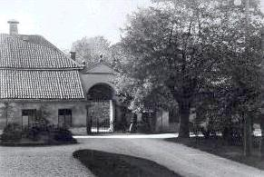 Södra porthuset från insidan. Byggt 1725-30. |
Bakom det stora kapellet byggdes 1885 ett litet grafkapell, och nedanför dessa kapell har man bygt ett särskildt hus, det s. k.ålderdomshemmet som invigdes 1881 och är afsedt för gamla systrar samt åt systrar som återvända från ansträngande arbeten å andra orter och behöfva vederkvicka sig. På andra sidan om kapellet längst öster ut, med fri utsigt öfver hela segelleden, bygger man nu det nya pastorshuset som skall bereda föreståndaren en lugnare bostad än den våning han hittills innehaft i diakonisshuset.
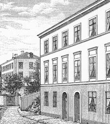  Hushållsskolan från väster Hushållsskolan från väster
Det ursprungliga, med detta skyddshem förenade Magdalenahemmet har allt mera öfvergått tillskyddshem för flickor i 12-18 års ålder. |
På andra sidan om Erstagatans bärgsstig, å Lilla Ersta område, som också tillhör inrättningen, har denna sitt barn- och räddningshem, af hvilka det förra vid 1889 års början hade 10 och det senare 19 barn somvårdades dels fritt, dels mot olika afgifter. I samma kvarter, men i hörnet af Fjällgatan, ligger ett annat, diakonissanstalten tillhörigt hus som anvisades tillhushållsskola, där vid 1889 års ingång 11 flickor erhöllo handledning i att baka, koka, tvätta, stryka och passaupp där inackorderade fruntimmer. Någon annan skolverksamhet ingår nu mera icke i diakonissanstaltens plan.
|

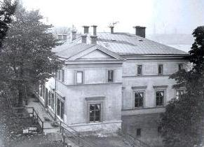 Magdalenahemmet, räddningshem för flickor. Bilden från 1880-99. Hemmet revs inte långt senare för utsprängningen av Stadsgårdshamnen. Från öster. |
På många områden verkar således människokärleken i det lilla samhället där uppe på södra bärgen,men mest kanske gör det sig kändt genom sin sjukvård, dels omedelbart där på stället i sjukhuset och sjukhemmet, dels medelbart genom utbildande af sjuksköterskor, och i bägge dessa afseenden uträttar den såsom människovän och läkare högt värderade d:r M. Sondén välsignelserika ting. Han är anstaltens ende läkare, men hinner äfven med att vara biträdande läkare vid södra barnbördshuset under det han sköter enskild praktik och är sekreterare i läkaresällskapet samt har länge varit redaktör af tidskriften »Hygiea». |
|
Hvad man än må tänka om troendes eller icke troendes inflytande på förhållanden som ej tillhöra det religiösaområdet, måste man dock medgifva, att de »troende» sjuksköterskorna hittills stått främst i kärleksfull omvårdnadaf de lidande som anförtrotts åt dem, de må tillhöra vår protestantiska diakonissanstalt eller vara katolska Elisabetsystrar hvilka också under senare år uträttat mycket godt i Stockholm. Här har man gått i motsatt riktning mot t. ex. i Frankrike, där sjukskötseln alt mer »laiciserats», dragits ifrån kongregationerna och lemnats i»profana» händer, hvaröfver dock till och med fritänkare bland de franske läkarna ganska skarpt beklagat sig. IStockholm tyckes sjuksköterskekallet alt mera öfverlemnas till "systrar" och det är icke öfverraskande, att denalltid påpassliga katolicismen också söker hålla sig framme, under det statskyrkans egna »systrar»anstränga sig att ej förlora ett område på hvilket de onekligen uträttat mycket godt. |
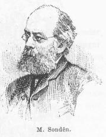 |
En värld som både bokstavligen och andligen är höjd över vardagslivets små futiliteter är det man stiger in i, då man passerar mellan de båda gamla vaktstugorna vid entrén till Ersta,Diakonissanstaltens åttio år gamla anläggning på Söderbergens ostliga flygel. Här uppe betyder tiden så litet, den märkvärdiga åttkantiga kyrkan står nästan precis som vid invigningen 1872, det lilla Pastorshuset ovanför stupen mot Folkungagatan och de gamla sjukhemmen har inte förändrats. Parken och täpporna blommar och vissnar i samma regelbundna rytm. Ser man ner på livet i Stadsgården och på fartygens lastrum som öppnarsig som svarta gap verkar de tennsoldatsstora arbetarnas strävande med lådor och stroppade balar så overkligt, ja, härifrån ter sig en börda på flera ton i en lyftkran mycket lätthanterlig. |
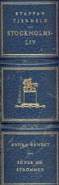 |
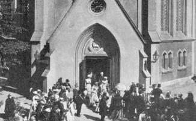  Då femtioårsjubileet firades 1901 fanns kung Oscar II bland de inbjudna. Då femtioårsjubileet firades 1901 fanns kung Oscar II bland de inbjudna. |
Men Diakonissanstalten är äldre än själva Erstaanläggningen. 1849 bildades ett sällskap, som skulle verka för att grunda en diakonissanstalt och då tretusen riksdaler insamlats, öppnades ett systerhem på Kungsholmen med den småländska prästdottern Marie Cederschiöld som ledare. 1855 skedde den första diakonissinvigningen och dessa hjälpande systrar hade från början fått vänja sig vid ett enkelt liv, de låg på halmmadrasser och kornkaffe, mjölgröt och hårt bröd utan smör var huvuddelen av kosten. Ett litet hus vid Jaktvarvet på Kungsholmen hyste i fortsättningen anstalten tills möjligheten till ett eget hem började skönjas. Då kastade man blickarna på Stora Ersta på krönet av berget och på den mycket världsliga installation däruppe som gick under det världsliga namnet Fåfänga. Från justitierådet A. Adlercreutz köptes området och på 70-talet började en byggnadsverksamhet, som lade det ena huset till det andra - det var skyddshem, elevhem, ålderdomshem, sjukhem för obotligt sjuka och mycket annat som behövdes -och som till slut också åstadkom det stora sjukhuset på granntomten, byggt 1907. |
Diakonissanstalten har alltid haft kraftfulla ledare och en sådan var också doktor J. C. Bringsom från 1862 till 1898 nådde stora timliga och andliga resultat. Anna Söderblom, ärkebiskop Nathan Söderbloms maka, har i sin bok »På livets trottoir» målat en förtjusande bild från Ersta. Hon skriver:
| »År 1881 flyttades barndomshemmet från det idylliska Ladugårdslandet över till Söder, till Stadsgården. Vår far fick en boställsvåning på sin arbetsplats, och arbetsplatsen var ett mycket stortgodsmagasin för varor som lossades från fartyg vid kajen och lastades på vagnar och kärror förspända med hästar eller järnvägsvagnar. Utsikten från hemmets fönster var vackrare än någonsin. Från fönstren sågo vi om söndagsmorgnarna de trogna skarorna av kyrkobesökare till Ersta diakonissanstalt vandra den långa vägen upp till södra bergen. Ingen spårvagn eller färja eller hiss förkortade ännu vägen. Den måste man gå till fots och Söderbergs trappor voro branta trätrappor den tiden. Stilla och högtidligt gingo de 'förnäme läsarne' eller den 'svarta paraden', såsom infödingarna i Stadsgården, kolingen och hans stallbröder, då ännu icke upptäckta av Albert Engström, plägade kalla pilgrimsskaran till Ersta. |
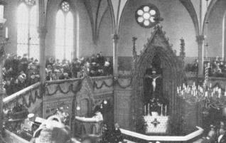  "Sirapstratten kallades kyrkan, och även interiören avviker från det vanliga. "Sirapstratten kallades kyrkan, och även interiören avviker från det vanliga.
|
Jag började följa skaran till det lilla kapellet på höjden. Dess form likaväl som det pietistiska uttryckssättet hade förskaffat det smädnamnet 'sirapstratten'. Där inne rådde den djupa andakten och stillheten, då doktor Bring på sitt egendomligt inträngande och innerliga sätt förkunnade evangelium. Visserligen vågade jag mig ej in i själva kyrkan. Men uppe på läktaren funnos några undangömda platser, en slags 'hedningarnas förgård', där man oförmärkt kunde krypa ned och ändå kunde både se och höra.
Det var tidiga barngudstjänster, då pastor Bring katekiserade, det var djupa ingående konfirmationsförhör. Både i Blasieholmskyrkan och Immanuelskyrkan funnos de många människorna, och det är det viktigaste. Men där var för litet kyrka. Där fanns predikstolen eller rättare talarstolen, men ej altaret. Altaret fanns uppe på Ersta. I det stilla kapellet där uppe på berget, där hängivna människor av en strängare observans utövade en världsförsakande fromhet i självuppoffrande kärleksverksamhet, där stod altaret helgat under den törnekröntes och korsfästes nog så naturalistiska bild.»
ERSTA - STADEN PÅ BERGET
av hovpredikanten Sven-Åke Rosenberg
På årets sista söndag 1872 ägde en kyrkoinvigning rum några hundra meter från den plats,där en gång senare Sofia kyrka skulle resa sina murar. Gunnar Wennerberg hade som ecklesiastikminister bifallit en hemställan från Diakonissanstaltens förvaltningsutskott, "att det vid anstalten uppförda kapellet måtte få invigas för offentlig gudstjänst med nattvardsgång och övriga kyrkliga förrättningar". Den store ärkebiskopen Anton Niklas Sundberg förrättade invigningen, assisterad av pastor primarius Fallenius, överhovpredikanten Grafström, kyrkoherdarna Rohtlieb och Afzelius och lektorn Elmblad, ''samtliga i mässkrudar".
I ett Ersta-nummer av "Sofiabladet" har nyligen framhållits, hur de båda helgedomarna, den stora Sofia-kyrkan och den lilla Ersta-kyrkan, från var sin höjd hälsar varandra: varje helgdagsmorgon ringer från de båda höjderna kyrkklockan och viger in dagen. Det kan väl tagas som en symbol för, hur de båda Guds-husen hör samman, hur Ersta Diakonissanstalt på sin plats inom Sofia församling vill på sitt sätt och i trohet mot sin uppgift kalla människor till Kristus och i diakoniens gärning tjäna folk och kyrka.
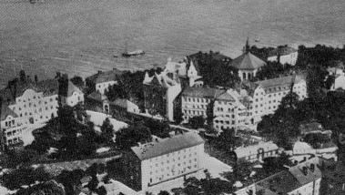  |
För de flesta torde det väl vara känt, att Ersta av alldeles speciella anledningar kom att bli bofast inom den nuvarande Sofia församlings gränser. Förgäves hade man sökt eftermöjligheter att, i staden få lämpliga lokaler för ett hem, där man kunde ta emot "gatans" kvinnliga ungdom. Människor hade så tagit avstånd från de försök som gjorts att skapa ett hem för sådana olyckliga unga människor, att de t. o. m. vägrat bo på samma gata, där man upprättat ett s. k. Magdalenahem. Det var den tidens sätt att reagera mot "fallna" kvinnor och mot dem som ville hjälpa dem! Då inköpte justitierådet Axel Adlercreutz egendomen St. Ersta, som till en början hyrdes av Diakonissanstalten och sedermera genom inköp övertogs av densamma. År 1862 kunde anstaltens överflyttning från Kungsholmen till Ersta begynna. Magdalenahemmet kunde upptaga sin verksamhet i en fastighet, som var belägen på den numera bortsprängda delen av berget, alltså på sluttningen ner mot Saltsjön. |
| Det synes värt att erinra om att det alltså icke var några pretentioner på en förnämlig boplats, som gav Ersta dess numera så beundrade läge. Det var viljan att skapa en skyddad och god miljö för vinddriven ungdom i en tid utan det nuvarande samhällets möjligheter att omhänderta dem som kommit vilse. Den sociala pionjärgärning som den tidens Ersta-systrar här fick utföra är värd stor respekt: utan stöd av barnavårdslagar och samhälleliga organ fick man gå ut och uppsöka de unga och sedan försöka uppbygga ett förtroendeförhållande på personlig grund, som kom de unga att stanna kvar på hemmet och bli hjälpta till en ny start i livet.
Det skulle naturligtvis föra för långt att följa Diakonissanstaltens historia under de snart 95 år som den varit bofast på Ersta. Bland de många företag av mycket skiftande art, som finns inom Sofiaförsamling, är Ersta Diakonissanstalt kanske det mest speciella. Här är en "stad på berget", som har vuxit upp genom tro och bön, genom offervilja och särpräglad människogemenskap. De sexton fastigheterna på området utgör framför allt ett vittnesbörd om en storslagen kvinnlig kyrkogärning: det är systrarnas offer och arbete som har skapat den ekonomiska grundvalen för hela verksamheten.
| 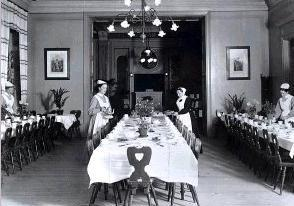 Diakonissornas matsal i Ersta nya sjukhus, byggt 1896. Bilden tagen 1910-19. |
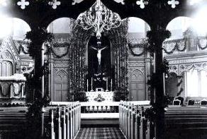 Interiör från Ersta kyrka | Ersta-systrarna bildar ju ett slags kristet "kooperativt" företag, ett kollektiv som dragit in också livets materiella verkligheter inom den kristna offerviljans gränser: man beräknar att den s. k. hempenning som diakonissorna erlägger under 1955 har uppgått till mer än 325 000 kr. Men även om Ersta alltså från sitt berg vittnar om detta det kristna gemenskapslivets verklighet mitt i en hård tid, så är det naturligtvis av större betydelse, att man där blir i stånd att utbilda och fostra människor till tjänst åt sjuka, gamla, betungade och på olika sätt hjälpbehövande människor. Den gången Ersta först byggde sitt hem på berget, hade som nämnts samhället alls icke hunnit så långt i omvårdnaden om människan. Numera frågar sig väl många: behövs en sådan verksamhet? Den som gör ett besök på Ersta sjukhus eller som möter någon av de gamla på sjukhemmet eller som ger sig tid att lyssna till vad en diakonissa kan berätta om sitt arbete får kanhända svar på den frågan. |
Viljan till personlig, kristen insats i vården om människan och strävan efter att söka nå längre än till attavhjälpa de lekamliga svårigheterna visar sig vara varmt uppskattade och eftersökta verkligheter, som den moderna människan är i stort behov av. Men därtill kommer den för kyrkan så viktiga frågan: kan hon göra rättvisa åt sitt kristna budskap utan att låta det utformas också såsom handling? Är inte det diakonala ämbetet för kyrkan lika angeläget i tidens nöd som det prästerliga?
| Uppför Erstabacken har genom tiderna strövat en lång rad av människor med skiftande öden.Bara att sitta och se på dem som en vanlig dag vid besöksdags kommer till sjukhuset kan ge en många tankar. De går till sina kära och sina vänner, ibland kanske med sorg i hjärtat, ibland mycket glada över någon som snart skall bli frisk. Man tänker: dessa som nu på Ersta sjukhus skall i handling möta en form av kyrkans förkunnelse, får de månne något med sig som kan sätta spår i livet? Eller de unga människor som drar in genom Erstaporten för att bli diakonissor och som man kanske ser en dag stå ute på berget och blicka bort över Sofia församling eller hän mot Gamla stans spetsiga husgavlar - vad tänker de, vad känner de vid anblicken av den svenska huvudstaden, dess oro och hets, de många anade eller upplevda ödena här? Stärks den unga viljan till kamp för Guds rike, till tjänande kärleks insatser överallt där sorg och bekymmer,ensamhet och ord trycker? Att ströva i Sofia församling är att - naturligtvis som i varje församling - möta historia. Inte främst kanske historia av den art som viskar i brinkarna kring Slottet och Storkyrkan - Söders historia handlar väl mer om människoöden av enkelt snitt än om stormän och kungar! Men inte var den mindre märklig för det. Vill man tillspetsa saken, kan man väl säga att det viktigaste som skedde i en församling var det som skedde i dess kyrka: där mötte Gud sin menighet. Gud kan människorna mötavarsomhelst - men Guds |
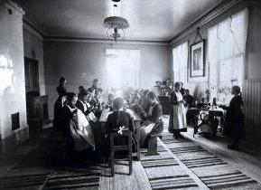 Interiör från Magdalenahemmet, räddningshem för flickor. Bilden tagen 1880-99. |
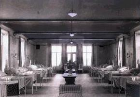 Sjuksal vid Ersta sjukhus 1907. |
bedjande församling, den som var avsedd att vara ett instrument för Guds nåd, fanns i helgedomen. Och den historia som skedde där - den som handlade om människornas möte med Gud - den var den viktigaste. Det är därför vi utan all romantik gärna vill se och tro, att också den del av Sofia församling som Ersta utgör har del i församlingens historia - den historia som alltså betyder att Gud möter och handlar med människor. För det är oss alltid ett lika stort under, när någon ung människa, gripen av Gud, ställer sig till Hans förfogande för att bli Herrens och Hans församlings tjänarinna. I försommartid, när vårt berg är en enda stor blomsterrabatt, kommer Stockholms biskop för att viga ett antal unga Erstasystrar till. diakonissor. Den högtiden är ett stycke kyrkohistoria mitt i nuet.
Men en diakonissanstalt kan inte "trona på minnen". Under de närmaste åren kan man förvänta att Ersta kommer att ändra silhuett. Byggnadsföretagen är igång: ett höghus vid hörnet Erstagatan-Folkungagatan skall bl. a. innehålla en högst nödvändig värmecentral för anstalt och sjukhus. |
Ersta sjukhus står inför en om- och utbyggnad, som inte torde vara genomförd förrän 1958. Bl. a. skall en fyravåningsbyggnad uppföras längs Fjällgatan. Anstaltens sjukhem skall också förnyas - ett trängande vårdbehov finnes för ensamma gamla, som har svårt att få någonstans att ta vägen i storstaden. Från Sofia församling har man oroats av att nybyggnaderna i tämligen avancerad modern arkitektur starkt kommer att förändra Ersta-klippans vackra kontur. Men kanske är det så, att varje tid bör få lämna sitt bidrag till bebyggelsen också på detta område. Det angelägna är att Diakonissanstalten blir funktionsduglig för de krav som tiden ställer på verksamheten.
Ersta Diakonissanstalt har nyligen fått en ny upplaga av sin sångbok. Där finns bl. a. en liten sång av denna jubileumsboks redaktör. I några sällsamt meningsfyllda strofer ger han uttryck åt det som varit och är det innersta i diakoniens gärning. När vi från Ersta Diakonissanstalt här bringar Sofia församling vår hyllning till femtioårsjubiléet må det ske med Arne Forsbergs ord i den sången:
och läka förtvivlans sår,
att livet för bröder våga
är vägen där Kristus går.
Fasta tron på fasta klippan
Ersta diakonisällskap, Erstagatan 1
Jag har i min ägo ett litet visitkort, tättskrivet med tröstens ord till min mor och mormor våren 1898: Jesus säger: Kommen till mig I alle arbetande och betungade ... I skolen finna ro till Edra själar ... Herren berede hennes hjärta att mottaga Hans nåd och att möta Honom i nattvarden och i döden.
| Min mormor, Carolina Lyberg, hade inte långt kvar att leva och vid sin sjukbädd önskade hon få nattvarden. För den skull sökte hennes dotter råd av en teologiutbildad, 28-årig vän till familjen, vilken vid den tiden verkade som lärare i min mors hemort Slite. Att jag tar fram den här påminnelsen om gångna tider beror på att visitkortet är en hälsning frånJohannes Norrby senior. Samme man skulle efter skollärarexamen i Uppsala och prästvigning i Visby 1894 omsider komma till Ersta diakonissanstalt som tjänstgörande präst. Han bytte för en tid detta kall mot kyrkoherdefunktion i Lovö med tjänst i Drottningholms slottskapell som tillförordnad hovpredikant. Men diakonissanstalten lyckades få tillbaka sin förlorade son och utnämnde honom till institutionensdirektor. I denna tjänst på Ersta framlevde han resten av sitt liv, samvetsgrann, plikttrogen och högt uppskattad av alla. |  Ersta nya sjukhus från Folkungagatan 1907. |
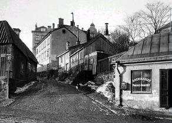 Erstagatan norrut från Folkungagatan |
Med hustrun Vilhelmina, född Kinnman, fick han nio barn, av vilka tre dog i barn- och ungdomsåren, medan de övriga blev högst dugliga samhällsmedlemmar. Som ofta i prästhem utvecklas begåvningar av intellektuell och konstnärlig art i den vanligen studievänliga atmosfären. Makarna Norrbys ättlingar var inga undantag från den regeln. Johannes och Vilhelmina gav musikalitet i arv och ett par av sönerna kom att helt ägna sig åt musiken. Gunnar känner vi till som en av landets främsta cellister och Johannes har verkat som sångare, bland annat som medlem av Björling-kvartetten och ledare av Akademiska kören. Framför allt är han känd för sitt mångåriga chefskap för Konsertföreningen och konserthuset. I intervjuer och musikpresentationer har svenska folket via etern fått lyssna till hans trygga, förtroendeingivande stämma.
1983 förärades den gamle söderbon Johannes Norrby Sofia kommunalförenings Magnoliapris, en magnoliaplanta och ett diplom. Rörd och glad emottog han priset och tackade med välkänd vältalighet i ett anförande fyllt av humor och värme. |
| Alla stockholmare vet var Ersta Diakonisällskap ligger, men för inte så länge sedan fanns ett annat Ersta också, vid Årsta gärde. Det var en pampig gård med betydande jordbruk, som helt utplånades när stadsdelen Östberga kom till. För säkerhets skull, så att inte taxiförare körde fel, utplånades också namnet Ersta från denna plats. Katarinas Ersta fick därmed ensamrätt på benämningen. Som ett iögonfallande inslag i panoramat över östra Söders höjder framträder Erstas lustiga åttkantiga kapell, krönt av ett pyttelitet centralt placerat torn, likt en spjutspets riktad mot himlen för direktkontakt med Vår Herre. Interiören har mera tycke av en gammal saluhall än av gudstjänstlokal, kanske som följd av en mindre lyckad restaurering. Kapellet uppfördes1872 efter ritningar av Pehr Ulrik Stenhammar som också står för de äldsta husen på platsen, gamla diakonisshuset och gamla sjukhuset. |
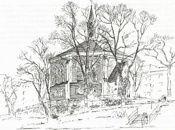  |
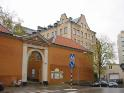  2002 2002 |
Vid grinden ligger de små porthusen, som en gång var entrén till den malmgård, vilken uppfördes under 1700-talet på Ersta av Johan Abraham Grill. Han var direktör vid Ostindiska kompaniet och därtill delägare i Södra varvet nedanför Erstaklippan.
Ett intressant kapitel i Erstas historia utgör det degelstålverk, som under bergmästaren i Bergskollegium,Bengt Andersson Qvists ledning drevs i slutet av 1700-talet. |
De båda porthusen inrymmer numera ett diakonimuseum. I det södra porthuset finns också ett bageri med säregen profil. Här står pensionerade diakonissor och bakar nattvardsbröd, under ständigt ökad efterfrågan, åt svenska kyrkan såväl som till frikyrkor. Denna service har nattvardsgäster åtnjutit sedan 1909. Tillverkningen, vilken numera är unik i vårt land, sedan kexfabriker i Göteborg och Örebro lagt ned bakning av osyrat bröd, är uppe i ett par miljoner oblat omåret.
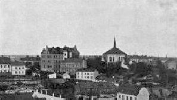 Vy från SV mot Ersta år 1901. Från vänster: barnhemmet, nya diakonisshuset, kapellet, sjukhemmet. |
Om kapellet syns långa vägar, så är institutionens näringsställe mera diskret. Innanför sirligt utformade grindar strax i kanten av stupet mot Stadsgården når man en underjordisk caféteria, som bjuder oss öppna famnen med storartad utsikt över Strömmen, Skeppsholmen och innerstaden. På en utsprängd hylla i Stadsgårdsklippan har Erstahemmet här infogat två våningar som gömmer sig i berget utan att väcka någon uppmärksamhet.Ett förslag att fylla hela Stadsgårdens bergvägg med insprängda kontor har tack och lov sopats under mattan. Om idén verkställts hade Katarinabergets bebyggelse visuellt hamnat på taket av ett kilometerlångt sjuvåningshus. |